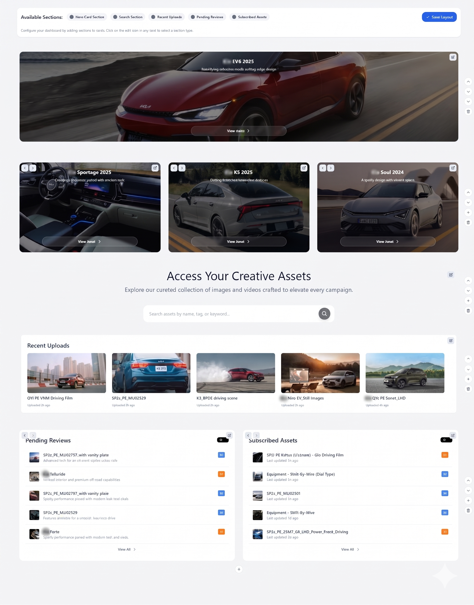

Digital Asset Management System
Architected a highly scalable Digital Asset Management (DAM) platform leveraging React, TypeScript, and Redux to centralize and optimize enterprise content operations. Engineered a robust, reusable component library utilizing Tailwind CSS and shadcn/ui, establishing consistent UI standards and significantly accelerating frontend development cycles. Implemented sophisticated, dynamic approval workflows that seamlessly automated complex media pipelines, ultimately streamlining content management processes and boosting overall operational efficiency by 30%.


Business Card Builder
Engineered a fully responsive, interactive digital business card platform utilizing HTML, JavaScript, and Tailwind CSS to modernize professional networking and brand identity management. Architected a dynamic user interface equipped with real-time live preview functionality, empowering users to instantly visualize and customize their digital assets. Implemented flexible, modular layouts with comprehensive styling controls, ensuring pixel-perfect rendering and seamless cross-device compatibility for a flawless user experience.


Asset Library
Engineered a high-performance asset management interface using HTML, JavaScript, and Tailwind CSS to streamline large-scale media operations. Integrated real-time search functionality and optimized data grids to significantly enhance the processing and rendering of complex media metadata. Designed a responsive and robust architecture to ensure seamless data handling and superior user experience across all devices.


Admin Settings
Architected a sophisticated enterprise-grade admin configuration module utilizing HTML, JavaScript, and Tailwind CSS to centralize and streamline complex application management. Engineered a highly responsive interface featuring flexible, modular layouts and dynamic content sections that empower administrators to seamlessly customize dashboard settings tailored to specific organizational workflows. Optimized frontend rendering and configuration controls to deliver a frictionless user experience, ultimately boosting overall operational efficiency by 30% and significantly reducing administrative overhead.



Media Annotation & Review Platform
Architected a responsive media annotation and collaboration platform utilizing Tailwind CSS, integrating real-time comments, interactive dashboards, and multi-format review tools supporting PDF, image, and video files. Designed robust workflows to accelerate team review processes and enhance feedback management across diverse media formats. Built dynamic user interfaces focused on high-performance rendering and seamless cross-device compatibility. Optimized overall user engagement and collaborative efficiency through modern frontend architecture and clean design standards.


Brand Asset & Artwork Management Platform
Architected a robust digital asset management solution utilizing React, shadcn/ui, and Tailwind CSS to centralize enterprise-level campaigns, artwork templates, and media resources. Engineered an intuitive, high-performance user interface featuring dynamic asset categorization, advanced search filtering, and seamless media previews to streamline content discovery. Integrated complex approval workflows, purchase order management, and secure downloadable resource pipelines, significantly enhancing cross-functional team collaboration, ensuring strict brand consistency, and accelerating marketing deployment cycles.


Global Tourism Campaign Platform
Developed and maintained a highly responsive, high-traffic virtual tourism platform for the Abu Dhabi Department of Culture and Tourism. Architected a scalable multilingual interface supporting English, Arabic, Spanish, German, and Chinese, implementing complex Right-to-Left (RTL) layout styling and immersive 360-degree interactive tours. Optimized cross-browser compatibility and web accessibility to ensure a seamless, culturally tailored user journey for a global audience.
Enterprise Web Platforms & E-Commerce
Developed and maintained end-to-end WordPress frontend applications and UI architectures for major enterprise clients, including Almarai, Kaya Skin Clinic, and PepPlay. Engineered custom layouts, dynamic media grids, and multi-functional interfaces combining corporate reporting, service booking, and e-commerce workflows. Focused on optimizing core web vitals, enhancing cross-device responsiveness, and delivering seamless digital experiences for high-traffic brand platforms.